Blazor control UI: voice, robustness explorer, Level 2 walk sandbox
2026-11-21 · Blazor WASM control UI (src/PoRobotTrain.Client) + .NET API proxy · headless Microsoft Edge (Playwright) · contract: docs/service_api.md. Ideas #11, #19 and #20. The Unreal twin implements the same features against the same service endpoints.
Test data. Every screenshot was taken against the real behaviour service (python -m robotcontrol.behaviours.service --no-mirror, port 8766) through the real .NET API, except walk_after_driving_1600x900.png. No Level 2 walking policy exists yet (training is still running), so that screenshot and the drive / walk-voice tests used a test browser that answered /api/robot/walk/state with a synthetic running policy state and recorded the /api/robot/walk/command POSTs locally. None of those POSTs reached the service. No robot was connected, and nothing in these features can reach it.
Before
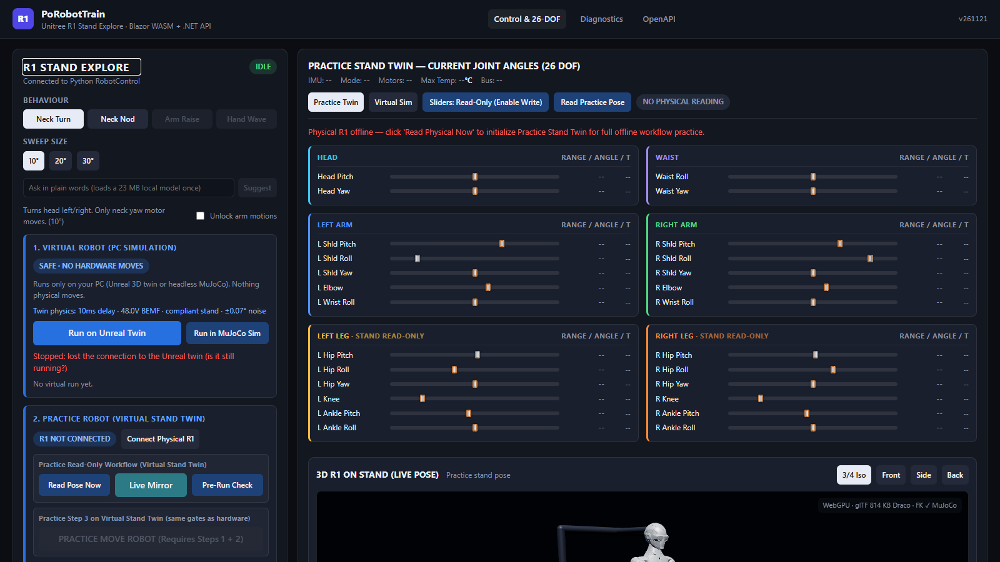
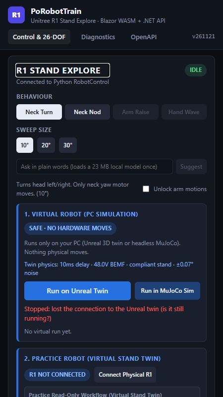
After: voice (#11)
All five HUD anchors are retained: 1. VIRTUAL ROBOT, 2. PHYSICAL / PRACTICE ROBOT (Read Pose / Live Mirror / Pre-Run Check), Move Physical R1 (still gated by Steps 1 + 2 and the confirm dialog), STOP, and the details log. The new Speak button and Replies toggle sit under the assistant box. Speech goes to text through the Web Speech API, or through Whisper tiny.en locally when the browser has no Web Speech API (or with ?whisper). The text goes through the same MiniLM matcher. A spoken request is applied like the matching click (select the behaviour and size, or show a joint slider), and the reply is spoken with speechSynthesis.
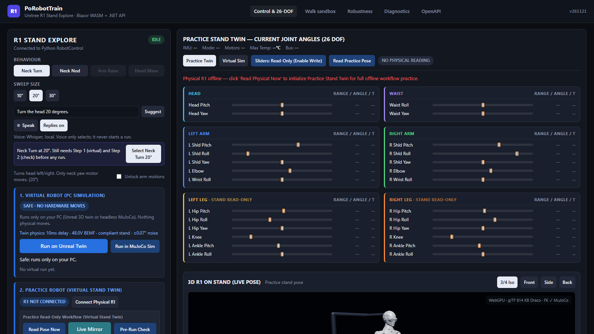
/api/robot/*: voice never starts, checks or runs anything.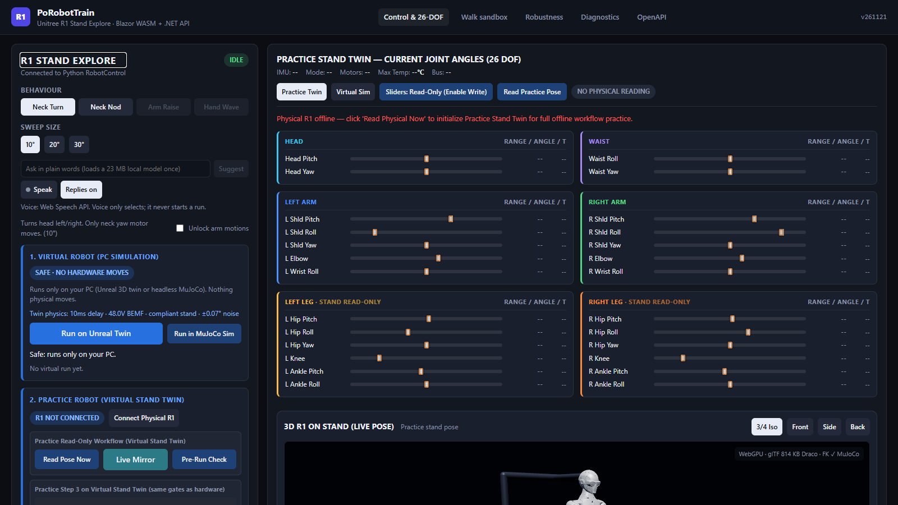
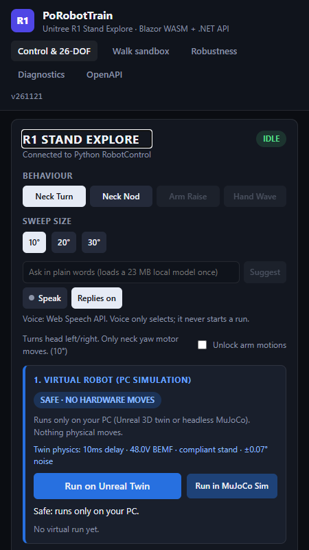
After: robustness explorer (#19)
The /robustness page starts sweeps (quick / full), shows live progress from /status.progress, and reads logs/robustness/latest.json through the API. Every cell shows its verdict as icon + word (never colour alone), the metrics, and why it failed. A banner names the dominant failure. In the current calibrated twin almost every cell, nominal included, fails on head-yaw acceleration (~290 rad/s², limit 80). This is expected: the shipped Level 0 policy chatters on head yaw after the sim calibration. Status colours come from the validated status palette, and a text table view is available.
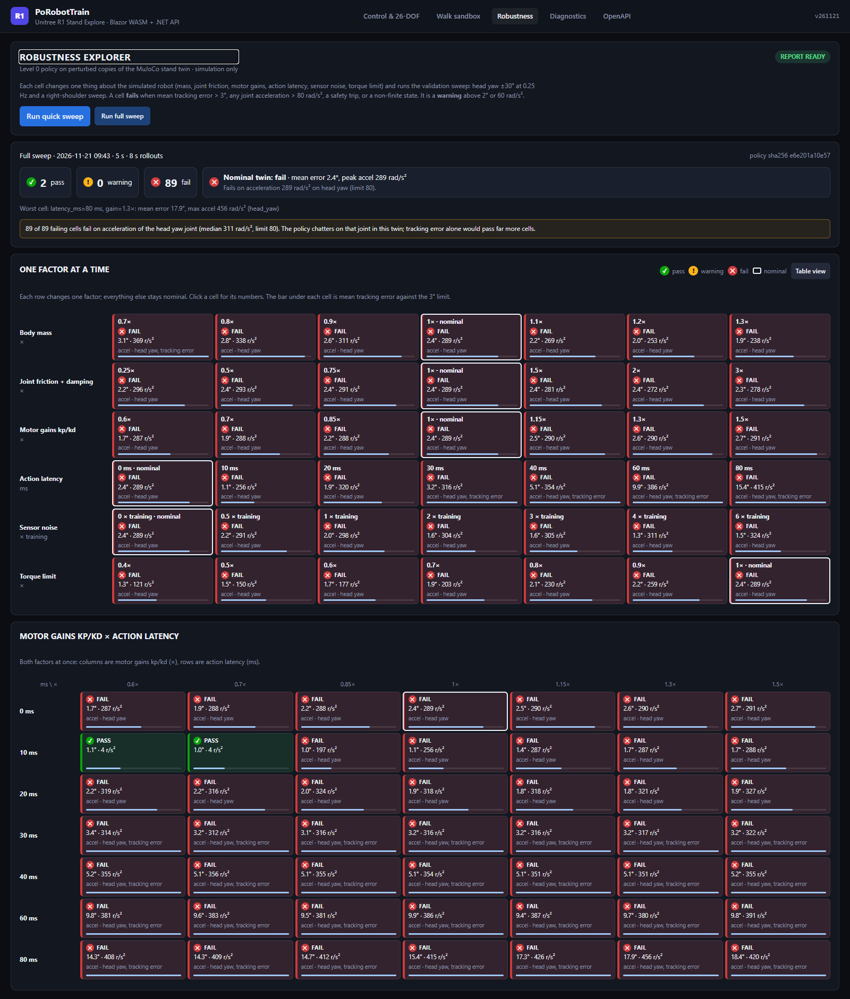
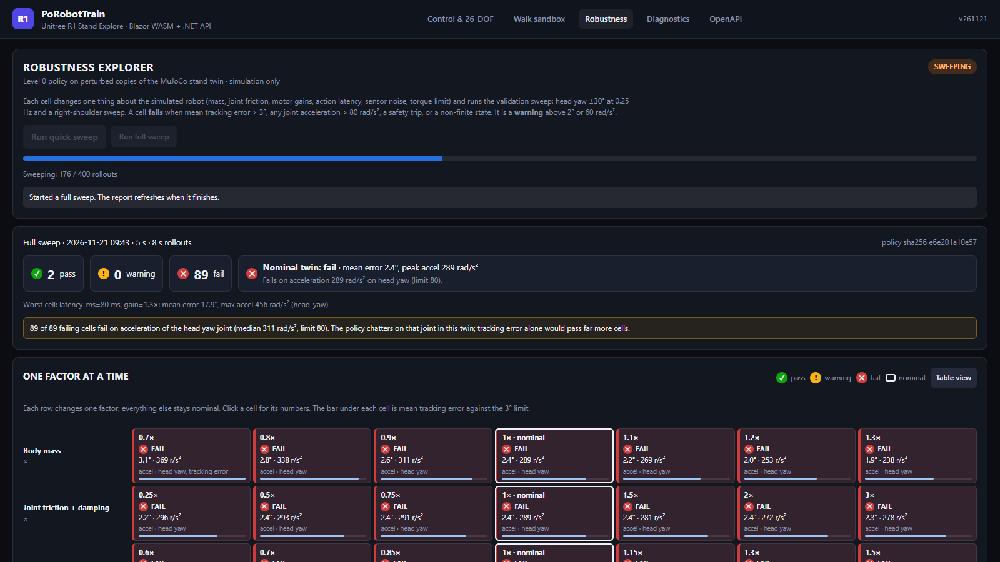
/status. The report refreshed by itself when the job ended.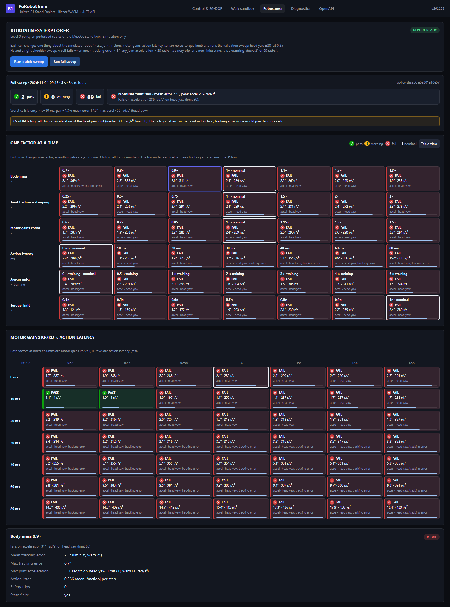
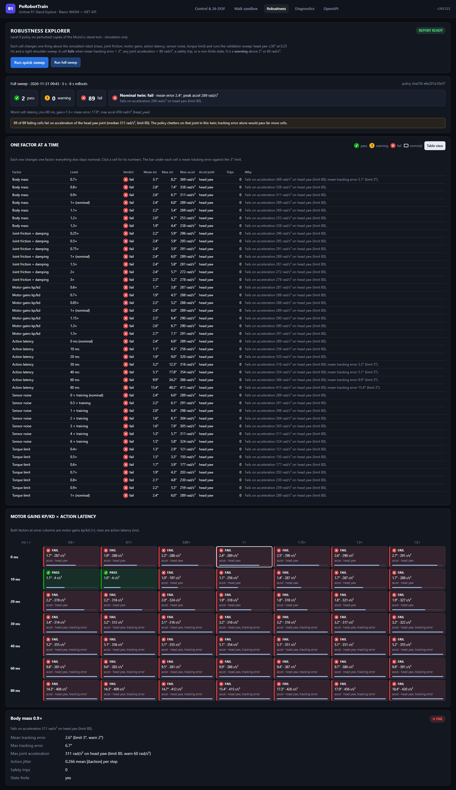
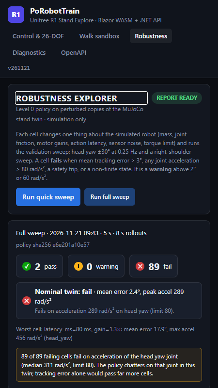
After: Level 2 walk sandbox (#20), simulation only
The /walk page offers Start (walking policy or hold pose), Reset, Stop and a course choice (loop / flat). You drive with WASD / arrows / Q E (Shift = full speed), a gamepad (left stick walks, right stick turns, 0.15 deadzone), a hold-to-drive on-screen pad, or voice ("walk forward", "turn left", "faster", "stop"; a spoken command is held until stop or a key). Commands are POSTed at 20 Hz while held, and zeros are sent twice on release. The three.js twin runs in a new walk mode: no stand, the floating base follows the MuJoCo pelvis pose, the course boxes and checkpoint rings are built from geometry, the next checkpoint has a beacon, and a follow camera tracks the robot. The HUD shows the command, speed, checkpoint, lap current / last / best, laps, falls, whether the Unreal twin is receiving poses, and sim time.
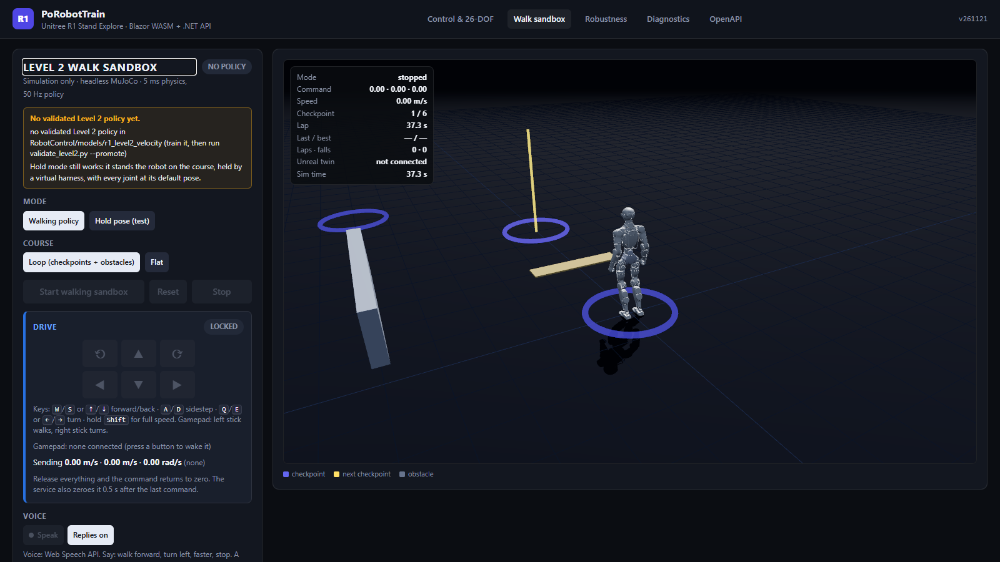
policy_reason is shown. The course is drawn before Start.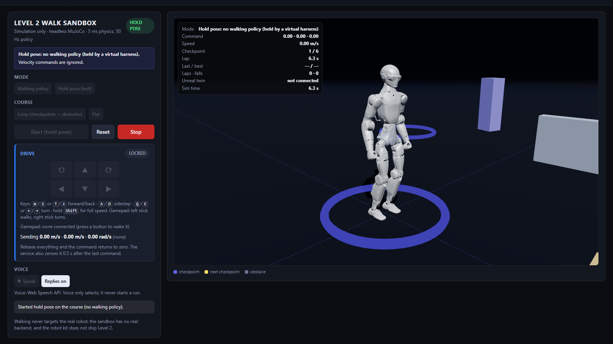
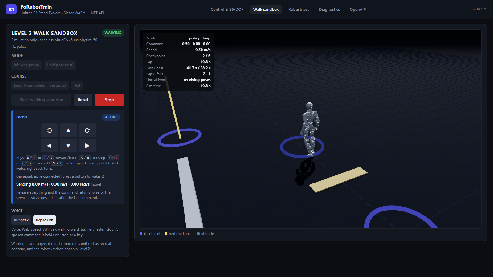
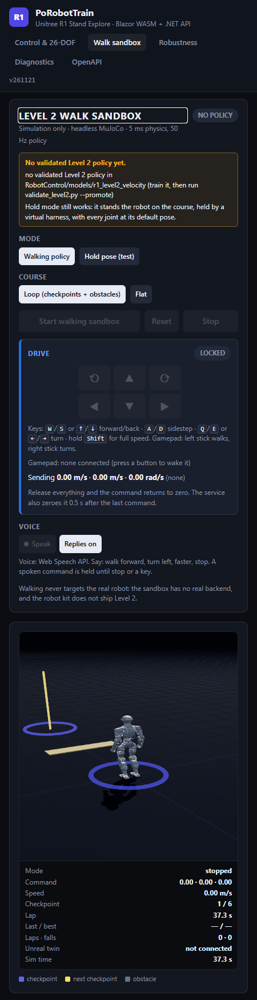
/diag
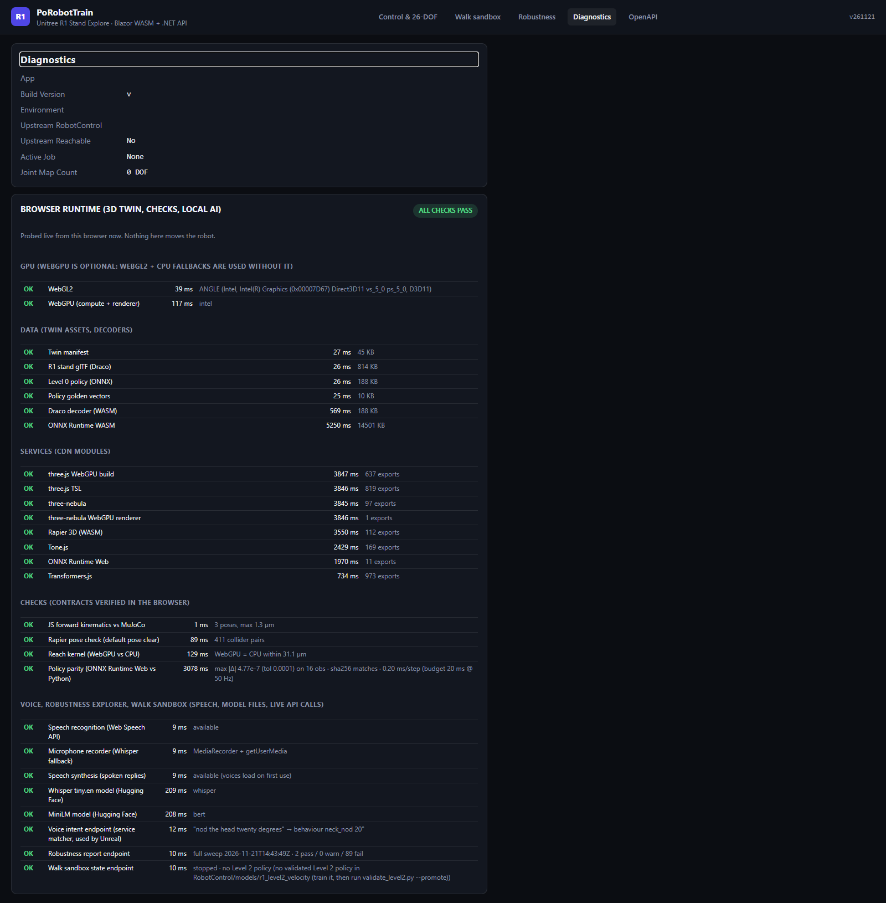
Fixed along the way
API → service POST bodies were empty. RobotControlHttpClient used PostAsJsonAsync, which streams with Transfer-Encoding: chunked and no Content-Length. The Python service (BaseHTTPRequestHandler) reads exactly Content-Length bytes, so it received {} for every POST from the Blazor UI: behaviour parameters fell back to defaults, and confirm was dropped. Bodies are now buffered with a Content-Length. A unit test drives the real client through a recording handler: it fails on the old code (expected 97 bytes, got null) and passes now. A long unbreakable log line no longer widens the dashboard at phone width (.po-log wraps anywhere).
Verification
| check | result |
|---|---|
dotnet test PoRobotTrain.Unit (12, 6 new: DTOs vs service payloads, request field names, Content-Length regression) | pass |
dotnet test PoRobotTrain.Integration (3, 1 new: assistant / robustness / walk routes, 400 + policy_reason, 501 old service, 503 offline) | pass |
| Build (Api + Client, trim analysis on) | 0 warnings, 0 errors |
| Voice end to end, Whisper path (fake microphone from a TTS WAV) | selects Neck Turn 20°, speaks the reply, no POSTs |
| Voice through the Web Speech API | not testable headless (it needs a live microphone and the browser's online recogniser) |
| Walk drive with keyboard / pad / voice | pass against a synthetic running state |
| Walk drive with a real policy and a gamepad | not run: no validated Level 2 policy yet, and no gamepad on the test machine |
| Robustness: full sweep started from the UI against the real service | progress shown, report refreshed |
| No horizontal scroll at 450 px (dashboard, walk, robustness) | scrollWidth = 450 |
| Unreal / URLab, device and hardware gates | not run by this stream (browser + API only; the Unreal side is a separate stream) |